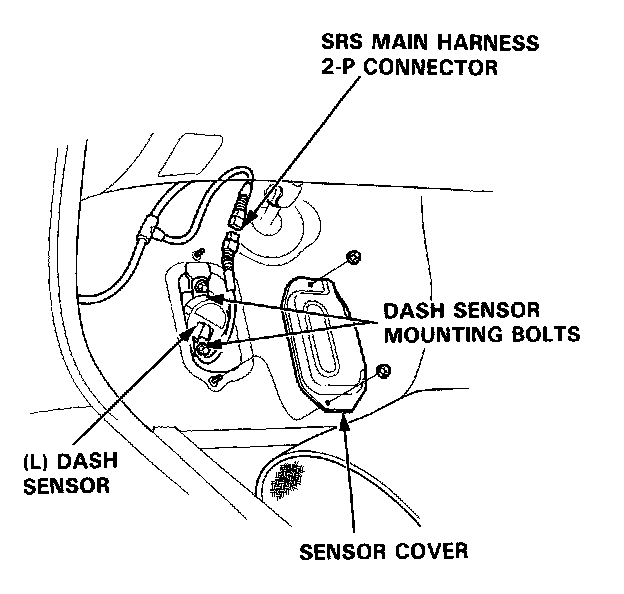
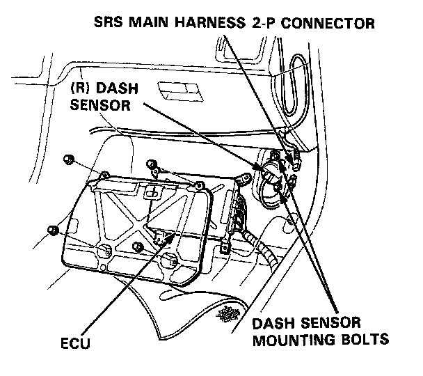
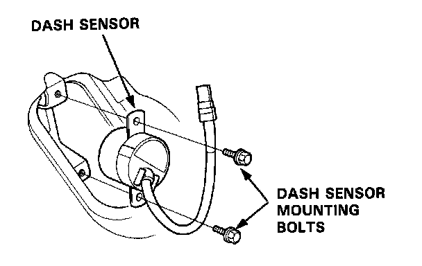

Dash Sensor Removal
Dash Sensor Removal
CAUTION:
- Do not damage the sensor wiring.
- Do not install used SRS parts from another car, use only new SRS parts.
- Carefully inspect the dash sensors for signs of being dropped or improperly handled, such as dents, cracks or deformation.
1. Before disconnecting any part of the SRS wire harness, install the short connectors - refer to "Short Connector Installation" procedure.
2. Left Dash Sensor:
Remove the footrest and left door sill molding, then pull the carpet back and remove the sensor cover.

3. Right Dash Sensor:
Remove the right door sill molding and pull back the carpeting. Remove the ECU.

4. Remove the 2 mounting bolts, then remove the dash sensor.
